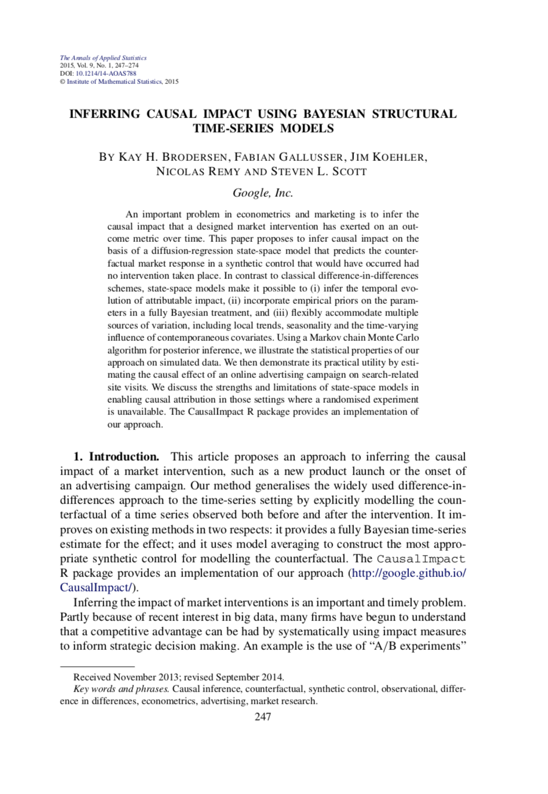
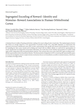
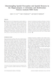

Google Scholar profile
Papers in statistics and machine learning
-
Variance reduction in bipartite experiments through correlation clusteringJ. Pouget-Abadie, K. Aydin, W. Schudy, K.H. Brodersen, Vahab Mirrokni (2019)
Neural Information Processing Systems (NeurIPS).
Abstract PDFCausal inference in randomized experiments typically assumes that the units of randomization and the units of analysis are one and the same. In some applications, however, these two roles are played by distinct entities linked by a bipartite graph. The key challenge in such bipartite settings is how to avoid interference bias, which ...Causal inference in randomized experiments typically assumes that the units of randomization and the units of analysis are one and the same. In some applications, however, these two roles are played by distinct entities linked by a bipartite graph. The key challenge in such bipartite settings is how to avoid interference bias, which would typically arise if we simply randomized the treatment at the level of analysis units. One effective way of minimizing interference bias in standard experiments is through cluster randomization, but this design has not been studied in the bipartite setting where conventional clustering schemes can lead to poorly powered experiments. This paper introduces a novel clustering objective and a corresponding algorithm that partitions a bipartite graph so as to maximize the statistical power of a bipartite experiment on that graph. Whereas previous work relied on balanced partitioning, our formulation suggests the use of a correlation clustering objective. We use a publicly-available graph of Amazon user-item reviews to validate our solution and illustrate how it substantially increases the statistical power in bipartite experiments. -

Inferring causal impact using Bayesian structural time-series modelsK.H. Brodersen, F. Gallusser, J. Koehler, N. Remy, S. Scott (2015)
Annals of Applied Statistics, Vol. 9, No. 1, 247–274.
doi:10.1214/14-AOAS788Abstract PDF R package CitationsAn important problem in econometrics and marketing is to infer the causal impact that a designed market intervention has exerted on an outcome metric over time. This paper proposes to infer causal impact on the basis of a diffusion-regression state-space model that predicts the counterfactual market response in a synthetic control ...An important problem in econometrics and marketing is to infer the causal impact that a designed market intervention has exerted on an outcome metric over time. This paper proposes to infer causal impact on the basis of a diffusion-regression state-space model that predicts the counterfactual market response in a synthetic control that would have occurred had no intervention taken place. In contrast to classical difference-in-differences schemes, state-space models make it possible to (i) infer the temporal evolution of attributable impact, (ii) incorporate empirical priors on the parameters in a fully Bayesian treatment, and (iii) flexibly accommodate multiple sources of variation, including local trends, seasonality, and the time-varying influence of contemporaneous covariates. Using a Markov chain Monte Carlo algorithm for posterior inference, we illustrate the statistical properties of our approach on simulated data. We then demonstrate its practical utility by estimating the causal effect of an online advertising campaign on search-related site visits. We discuss the strengths and limitations of state-space models in enabling causal attribution in those settings where a randomised experiment is unavailable. The CausalImpact R package provides an implementation of our approach. -
Inversion of hierarchical Bayesian models using Gaussian processesE. Lomakina, S. Paliwal, A.O. Diaconescu, K.H. Brodersen, E.A. Aponte, J.M. Buhmann, K.E. Stephan (2015)
NeuroImage, Vol. 118, 133–145
doi:10.1016/j.neuroimage.2015.05.084PDF WebsiteOver the past decade, computational approaches to neuroimaging have increasingly made use of hierarchical Bayesian models (HBMs), either for inferring on physiological mechanisms underlying fMRI data (e.g., dynamic causal modelling, DCM) or for deriving computational trajectories (from behavioural data) which serve as regressors in ...Over the past decade, computational approaches to neuroimaging have increasingly made use of hierarchical Bayesian models (HBMs), either for inferring on physiological mechanisms underlying fMRI data (e.g., dynamic causal modelling, DCM) or for deriving computational trajectories (from behavioural data) which serve as regressors in general linear models. However, an unresolved problem is that standard methods for inverting the hierarchical Bayesian model are either very slow, e.g. Markov Chain Monte Carlo Methods (MCMC), or are vulnerable to local minima in non-convex optimisation problems, such as variational Bayes (VB). This article considers Gaussian process optimisation (GPO) as an alternative approach for global optimisation of sufficiently smooth and efficiently evaluable objective functions. GPO avoids being trapped in local extrema and can be computationally much more efficient than MCMC. Here, we examine the benefits of GPO for inverting HBMs commonly used in neuroimaging, including DCM for fMRI and the Hierarchical Gaussian Filter (HGF). Importantly, to achieve computational efficiency despite high-dimensional optimisation problems, we introduce a novel combination of GPO and local gradient-based search methods. The utility of this GPO implementation for DCM and HGF is evaluated against MCMC and VB, using both synthetic data from simulations and empirical data. Our results demonstrate that GPO provides parameter estimates with equivalent or better accuracy than the other techniques, but at a fraction of the computational cost required for MCMC. We anticipate that GPO will prove useful for robust and efficient inversion of high-dimensional and nonlinear models of neuroimaging data. -
A model-based approach to predicting graduate-level performance using indicators of undergraduate-level performanceJ. Zimmermann, K.H. Brodersen, H.R. Heinimann, J.M. Buhmann (2015)
Journal of Educational Data Mining, Vol. 7, No. 3, 151–176
WebsiteThe graduate admissions process is crucial for controlling the quality of higher education, yet rules-of-thumb and domain-specific experiences often dominate evidence-based approaches. The goal of the present study is to dissect the predictive power of undergraduate performance indicators ...The graduate admissions process is crucial for controlling the quality of higher education, yet rules-of-thumb and domain-specific experiences often dominate evidence-based approaches. The goal of the present study is to dissect the predictive power of undergraduate performance indicators and their aggregates. We analyze 81 variables in 171 student records from a Bachelor's and a Master's program in Computer Science and employ state-of-the-art modelsods suitable for high-dimensional data-settings. We consider regression models in combination with variable selection and variable aggregation embedded in a double-layered cross-validation loop. Moreover, bootstrapping is employed to identify the importance of explanatory variables. Critically, the data is not confounded by an admission-induced selection bias, which allows us to obtain an unbiased estimate of the predictive value of undergraduatelevel indicators for subsequent performance at the graduate level. Our results show that undergraduatelevel performance can explain 54% of the variance in graduate-level performance. Significantly, we unexpectedly identified the third-year grade point average as the most significant explanatory variable, whose influence exceeds the one of grades earned in challenging first-year courses. Analyzing the structure of the undergraduate program shows that it primarily assesses a single set of student abilities. Finally, our results provide a methodological basis for deriving principled guidelines for admissions committees. -
Variational Bayesian mixed-effects inference for classification studiesK.H. Brodersen, J. Daunizeau, C. Mathys, J.R. Chumbley, J.M. Buhmann, K.E. Stephan (2013)
NeuroImage, 76, 345-361.
doi:10.1016/j.neuroimage.2013.03.008PDF WebsiteMultivariate classification algorithms are powerful tools for predicting cognitive or pathophysiological states from neuroimaging data. Assessing the utility of a classifier in application domains such as cognitive neuroscience, brain-computer interfaces, or clinical diagnostics necessitates inference on classification performance ...Multivariate classification algorithms are powerful tools for predicting cognitive or pathophysiological states from neuroimaging data. Assessing the utility of a classifier in application domains such as cognitive neuroscience, brain-computer interfaces, or clinical diagnostics necessitates inference on classification performance at more than one level, i.e., both in individual subjects and in the population from which these subjects were sampled. Such inference requires models that explicitly account for both fixed-effects (within-subjects) and random-effects (between-subjects) variance components. While models of this sort are standard in mass-univariate analyses of fMRI data, they have not yet received much attention in multivariate classification studies of neuroimaging data, presumably because of the high computational costs they entail. This paper extends a recently developed hierarchical model for mixed-effects inference in multivariate classification studies and introduces an efficient variational Bayes approach to inference. Using both synthetic and empirical fMRI data, we show that this approach is equally simple to use as, yet more powerful than, a conventional t-test on subject-specific sample accuracies, and computationally much more efficient than previous sampling algorithms and permutation tests. Our approach is independent of the type of underlying classifier and thus widely applicable. The present framework may help establish mixed-effects inference as a future standard for classification group analyses. -
Probabilistic performance evaluation for multiclass classification using the posterior balanced accuracyH. Carrillo, K.H. Brodersen, J.A. Castellanos (2013)
ROBOT 2013, 347-361, Springer.
doi:10.1007/978-3-319-03413-3_25PDF WebsiteAn important problem in robotics is the empirical evaluation of classification algorithms that allow a robotic system to make accurate categorical predictions about its environment. Current algorithms ...An important problem in robotics is the empirical evaluation of classification algorithms that allow a robotic system to make accurate categorical predictions about its environment. Current algorithms are often assessed using sample statistics that can be difficult to interpret correctly and do not always provide a principled way of comparing competing algorithms. In this paper, we present a probabilistic alternative based on a Bayesian framework for inferring on balanced accuracies. Using the proposed probabilistic evaluation, it is possible to assess the balanced accuracy's posterior distribution of binary and multiclass classifiers. In addition, competing classifiers can be compared based on their respective posterior distributions. We illustrate the practical utility of our scheme and its properties by reanalyzing the performance of a recently published algorithm in the domain of visual action detection and on synthetic data. To facilitate its use, we provide an open-source MATLAB implementation. -
Generative embedding and variational Bayesian inference for multivariate time seriesK.H. Brodersen (2012)
PhD thesis, ETH Zurich, Switzerland.
PDFMultivariate time series can be modelled using differential equations that describe how the components of an underlying dynamical system interact in time. A challenging domain of application ...Multivariate time series can be modelled using differential equations that describe how the components of an underlying dynamical system interact in time. A challenging domain of application is neuroscience, where dynamic causal models have been increasingly used to shed light on the mechanisms behind multivariate time series of brain activity acquired in the healthy and the diseased human brain. This thesis introduces an approach to translating such models into clinical applications which we refer to as generative embedding. Our approach exploits the notion that a mechanistically interpretable description of a system may provide more useful insights than the observed time series themselves. Conceptually, we begin by developing a model-based classification approach that is based on the combination of a generative model and a discriminative classifier. We show that this approach may lead to significantly more accurate diagnostic classifications and deeper mechanistic insights than previous schemes. Using a classifier on hierarchical data, as we do here, requires us to revisit conventional approaches to performance evaluation. We introduce novel Bayesian fixed-effects and mixed-effects models for inference on classification performance that correctly account for distinct sources of uncertainty to appropriately constrain posterior inferences. We propose to replace conventional classification accuracies by balanced accuracies whenever the data are not perfectly balanced themselves. We demonstrate the properties of these models using stochastic approximate inference based on Markov chain Monte Carlo. We then derive a computationally highly efficient deterministic variational Bayes approximation. Complementary to its use in classification, generative embedding may enable the discovery of mechanistically interpretable subgroups that were not known a priori. We develop a model-based clustering approach which we use to dissect a group of patients diagnosed with schizophrenia into subgroups with clinical validity. In summary, this thesis explores generative embedding and variational Bayesian inference to establish the conceptual, statistical, and computational foundations for utilizing model-based classification and clustering approaches in a clinical context. We envisage that future applications of our approach will enable the formulation of novel mechanistic hypotheses that decompose groups of patients with similar symptoms into pathophysiologically distinct subgroups. -
Bayesian mixed-effects inference on classification performance in hierarchical data setsK.H. Brodersen, C. Mathys, J.R. Chumbley, J. Daunizeau, C.S. Ong, J.M. Buhmann, K.E. Stephan (2012)
Journal of Machine Learning Research, 13, 3133-3176.
PDFClassification algorithms are frequently used on data with a natural hierarchical structure. For instance, classifiers are often trained and tested on trial-wise measurements, separately for each subject within a group ...Classification algorithms are frequently used on data with a natural hierarchical structure. For instance, classifiers are often trained and tested on trial-wise measurements, separately for each subject within a group. One important question is how classification outcomes observed in individual subjects can be generalized to the population from which the group was sampled. To address this question, this paper introduces novel statistical models that are guided by three desiderata. First, all models explicitly respect the hierarchical nature of the data, that is, they are mixed-effects models that simultaneously account for within-subjects (fixed-effects) and across-subjects (random-effects) variance components. Second, maximum-likelihood estimation is replaced by full Bayesian inference in order to enable natural regularization of the estimation problem and to afford conclusions in terms of posterior probability statements. Third, inference on classification accuracy is complemented by inference on the balanced accuracy, which avoids inflated accuracy estimates for imbalanced data sets. We introduce hierarchical models that satisfy these criteria and demonstrate their advantages over conventional methods using MCMC implementations for model inversion and model selection on both synthetic and empirical data. We envisage that our approach will improve the sensitivity and validity of statistical inference in future hierarchical classification studies. -
The balanced accuracy and its posterior distributionK.H. Brodersen, C.S. Ong, K.E. Stephan, J.M. Buhmann (2010)
Proceedings of the 20th International Conference on Pattern Recognition, 3121-3124
doi:10.1109/icpr.2010.764PDF Code CitationsEvaluating the performance of a classification algorithm critically requires a measure of the degree to which unseen examples have been identified with their correct class labels. In practice, generalizability is frequently estimated by ...Evaluating the performance of a classification algorithm critically requires a measure of the degree to which unseen examples have been identified with their correct class labels. In practice, generalizability is frequently estimated by averaging the accuracies obtained on individual cross-validation folds. This procedure, however, is problematic in two ways. First, it does not allow for the derivation of meaningful confidence intervals. Second, it leads to an optimistic estimate when a biased classifier is tested on an imbalanced dataset. We show that both problems can be overcome by replacing the conventional point estimate of accuracy by an estimate of the posterior distribution of the balanced accuracy. -
The binormal assumption on precision-recall curvesK.H. Brodersen, C.S. Ong, K.E. Stephan, J.M. Buhmann (2010)
Proceedings of the 20th International Conference on Pattern Recognition, 4263-4266
doi:10.1109/icpr.2010.1036PDF CodeThe precision-recall curve (PRC) has become a widespread conceptual basis for assessing classification performance. The curve relates the positive predictive value of a classifier to its true positive rate and often provides a useful ...The precision-recall curve (PRC) has become a widespread conceptual basis for assessing classification performance. The curve relates the positive predictive value of a classifier to its true positive rate and often provides a useful alternative to the well-known receiver operating characteristic (ROC). The empirical PRC, however, turns out to be a highly imprecise estimate of the true curve, especially in the case of a small sample size and class imbalance in favour of negative examples. Ironically, this situation tends to occur precisely in those applications where the curve would be most useful, e.g., in anomaly detection or information retrieval. Here, we propose to estimate the PRC on the basis of a simple distributional assumption about the decision values that generalizes the established binormal model for estimating smooth ROC curves. Using simulations, we show that our approach outperforms empirical estimates, and that an account of the class imbalance is crucial for obtaining unbiased PRC estimates.
Papers in computational neuroscience
-
Atypical processing of uncertainty in individuals at risk for psychosisD.M.Cole, A.O.Diaconescu, U.J. Pfeiffer, K.H. Brodersen, C.D. Mathys, D. Julkowski, S. Ruhrmann, L. Schilbach, M. Tittgemeyer, K. Vogeley, K.E. Stephan (2020)
NeuroImage: Clinical
doi:10.1016/j.nicl.2020.102239PDF WebsiteCurrent theories of psychosis highlight the role of abnormal learning signals, i.e., prediction errors (PEs) and uncertainty, in the formation of delusional beliefs. We employed computational analyses of behaviour and functional magnetic resonance imaging (fMRI) to examine whether ...Current theories of psychosis highlight the role of abnormal learning signals, i.e., prediction errors (PEs) and uncertainty, in the formation of delusional beliefs. We employed computational analyses of behaviour and functional magnetic resonance imaging (fMRI) to examine whether such abnormalities are evident in clinical high risk (CHR) individuals. Non-medicated CHR individuals (n = 13) and control participants (n = 13) performed a probabilistic learning paradigm during fMRI data acquisition. We used a hierarchical Bayesian model to infer subject-specific computations from behaviour – with a focus on PEs and uncertainty (or its inverse, precision) at different levels, including environmental ‘volatility’ – and used these computational quantities for analyses of fMRI data. Computational modelling of CHR individuals’ behaviour indicated volatility estimates converged to significantly higher levels than in controls. Model-based fMRI demonstrated increased activity in prefrontal and insular regions of CHR individuals in response to precision-weighted low-level outcome PEs, while activations of prefrontal, orbitofrontal and anterior insula cortex by higher-level PEs (that serve to update volatility estimates) were reduced. Additionally, prefrontal cortical activity in response to outcome PEs in CHR was negatively associated with clinical measures of global functioning. Our results suggest a multi-faceted learning abnormality in CHR individuals under conditions of environmental uncertainty, comprising higher levels of volatility estimates combined with reduced cortical activation, and abnormally high activations in prefrontal and insular areas by precision-weighted outcome PEs. This atypical representation of high- and low-level learning signals might reflect a predisposition to delusion formation. -
Reward-guided learning with and without causal attributionG. Jocham*, K.H. Brodersen*, A.O. Constantinescu, M.C. Kahn, A. Ianni, M.E. Walton, M.F. Rushworth, T.E. Behrens (2016)
Neuron, Vol. 90, Issue 1, 177–190
* Co-first authors
doi:10.1016/j.neuron.2016.02.018PDF Supplement WebsiteWhen an organism receives a reward, it is crucial to know which of many candidate actions caused this reward. However, recent work suggests that learning is possible even when this most fundamental assumption is not met. We used novel reward-guided learning paradigms ...When an organism receives a reward, it is crucial to know which of many candidate actions caused this reward. However, recent work suggests that learning is possible even when this most fundamental assumption is not met. We used novel reward-guided learning paradigms in two fMRI studies to show that humans deploy separable learning mechanisms that operate in parallel. While behaviour was dominated by precise contingent learning, it also revealed hallmarks of non-contingent learning strategies. These learning mechanisms were separable behaviourally and neurally. Lateral orbitofrontal cortex supported contingent learning and reflected contingencies between outcomes and their causal choices. Amygdala responses around reward times related to statistical patterns of learning. Time-based heuristic mechanisms were related to activity in sensorimotor corticostriatal circuitry. Our data point to the existence of several learning mechanisms in the human brain, of which only one relies on applying known rules about the causal structure of the task. -
Computational neuroimaging strategies for single patient predictionsK.E. Stephan, F. Schlagenhauf, Q.J.M. Huys, S. Raman, E.A. Aponte, K.H.Brodersen, L. Rigoux, R.J. Moran, J. Daunizeau, R.J. Dolan, K.J. Friston, A. Heinz (2016)
NeuroImage
doi:10.1016/j.neuroimage.2016.06.038WebsiteNeuroimaging increasingly exploits machine learning techniques in an attempt to achieve clinically relevant single-subject predictions. An alternative to machine learning, which tries to establish predictive links between features of the observed data and clinical variables, is the deployment of computational models for inferring ...Neuroimaging increasingly exploits machine learning techniques in an attempt to achieve clinically relevant single-subject predictions. An alternative to machine learning, which tries to establish predictive links between features of the observed data and clinical variables, is the deployment of computational models for inferring on the (patho)physiological and cognitive mechanisms that generate behavioural and neuroimaging responses. This paper discusses the rationale behind a computational approach to neuroimaging-based single-subject inference; focusing on its potential for characterising disease mechanisms in individual subjects and mapping these characterisations to clinical predictions. Following an overview of two main approaches – Bayesian model selection and generative embedding – which can link computational models to individual predictions, we review how these modelsods accommodate heterogeneity in psychiatric and neurological spectrum disorders, help avoid erroneous interpretations of neuroimaging data, and establish a link between a mechanistic, model-based approach and the statistical perspectives afforded by machine learning. -
Uncertainty in perception and the Hierarchical Gaussian FilterC.D. Mathys, E.I. Lomakina, J. Daunizeau, S. Iglesias, K.H. Brodersen, K.J. Friston, K.E. Stephan (2014)
Frontiers in Human Neuroscience
doi:10.3389/fnhum.2014.00825PDF WebsiteIn its full sense, perception rests on an agent's model of how its sensory input comes about and the inferences it draws based on this model. These inferences are necessarily uncertain. Here, we illustrate how the Hierarchical Gaussian Filter (HGF) offers a principled and generic way to deal with the several forms that uncertainty in perception takes ...In its full sense, perception rests on an agent's model of how its sensory input comes about and the inferences it draws based on this model. These inferences are necessarily uncertain. Here, we illustrate how the Hierarchical Gaussian Filter (HGF) offers a principled and generic way to deal with the several forms that uncertainty in perception takes. The HGF is a recent derivation of one-step update equations from Bayesian principles that rests on a hierarchical generative model of the environment and its (in)stability. It is computationally highly efficient, allows for online estimates of hidden states, and has found numerous applications to experimental data from human subjects. In this paper, we generalize previous descriptions of the HGF and its account of perceptual uncertainty. First, we explicitly formulate the extension of the HGF's hierarchy to any number of levels; second, we discuss how various forms of uncertainty are accommodated by the minimization of variational free energy as encoded in the update equations; third, we combine the HGF with decision models and demonstrate the inversion of this combination; finally, we report a simulation study that compared four optimization methods for inverting the HGF/decision model combination at different noise levels. These four methods (Nelder–Mead simplex algorithm, Gaussian process-based global optimization, variational Bayes and Markov chain Monte Carlo sampling) all performed well even under considerable noise, with variational Bayes offering the best combination of efficiency and informativeness of inference. Our results demonstrate that the HGF provides a principled, flexible, and efficient—but at the same time intuitive—framework for the resolution of perceptual uncertainty in behaving agents. -
Laminar activity in the hippocampus and entorhinal cortex related to novelty and episodic encodingA. Maass, H. Schütze, O. Speck, A. Yonelinas, C. Tempelmann, H.J. Heinze, D. Berron, A. Cardenas-Blanco, K.H. Brodersen, K.E. Stephan, E. Düzel (2014)
Nature Communications
doi:10.1038/ncomms6547PDF WebsiteThe ability to form long-term memories for novel events depends on information processing within the hippocampus (HC) and entorhinal cortex (EC). The HC-EC circuitry shows a quantitative segregation of anatomical directionality into ...The ability to form long-term memories for novel events depends on information processing within the hippocampus (HC) and entorhinal cortex (EC). The HC-EC circuitry shows a quantitative segregation of anatomical directionality into different neuronal layers. Whereas superficial EC layers mainly project to dentate gyrus (DG), CA3 and apical CA1 layers, HC output is primarily sent from pyramidal CA1 layers and subiculum to deep EC layers. Here we utilize this directionality information by measuring encoding activity within HC/EC subregions with 7 Tesla high resolution functional magnetic resonance imaging (fMRI). Multivariate Bayes decoding within HC/EC subregions shows that processing of novel information most strongly engages the input structures (superficial EC and DG/CA2-3), whereas subsequent memory is more dependent on activation of output regions (deep EC and pyramidal CA1). This suggests that while novelty processing is strongly related to HC-EC input pathways, the memory fate of a novel stimulus depends more on HC-EC output. -
Dissecting psychiatric spectrum disorders by generative embeddingK.H. Brodersen, L. Deserno, F. Schlagenhauf, Z. Lin, W.D. Penny, J.M. Buhmann, K.E. Stephan (2014)
NeuroImage: Clinical
doi:10.1016/j.nicl.2013.11.002PDF WebsiteThis proof-of-concept study examines the feasibility of defining subgroups in psychiatric spectrum disorders by generative embedding, using dynamical system models which infer neuronal circuit mechanisms from neuroimaging data. To this end, we re-analysed ...This proof-of-concept study examines the feasibility of defining subgroups in psychiatric spectrum disorders by generative embedding, using dynamical system models which infer neuronal circuit mechanisms from neuroimaging data. To this end, we re-analysed an fMRI dataset of 41 patients diagnosed with schizophrenia and 42 healthy controls performing a numerical n-back working-memory task. In our generative-embedding approach, we used parameter estimates from a dynamic causal model (DCM) of a visual-parietal-prefrontal network to define a model-based feature space for the subsequent application of supervised and unsupervised learning techniques. First, using a linear support vector machine for classification, we were able to predict individual diagnostic labels significantly more accurately (78%) from DCM-based effective connectivity estimates than from functional connectivity between (62%) or local activity within the same regions (55%). Second, an unsupervised approach based on variational Bayesian Gaussian mixture modelling provided evidence for two clusters which mapped onto patients and controls with nearly the same accuracy (71%) as the supervised approach. Finally, when restricting the analysis only to the patients, Gaussian mixture modelling suggested the existence of three patient subgroups, each of which was characterised by a different architecture of the visual-parietal-prefrontal working-memory network. Critically, even though this analysis did not have access to information about the patients’ clinical symptoms, the three neurophysiologically defined subgroups mapped onto three clinically distinct subgroups, distinguished by significant differences in negative symptom severity, as assessed on the Positive and Negative Syndrome Scale (PANSS). In summary, this study provides a concrete example of how psychiatric spectrum diseases may be split into subgroups that are defined in terms of neurophysiological mechanisms specified by a generative model of network dynamics such as DCM. The results corroborate our previous findings in stroke patients that generative embedding, compared to analyses of more conventional measures such as functional connectivity or regional activity, can significantly enhance both the interpretability and performance of computational approaches to clinical classification. -
Hierarchical prediction errors in midbrain and basal forebrain during sensory learningS. Iglesias, C. Mathys, K.H. Brodersen, L. Kasper, M. Piccirelli, H.E.M. den Ouden, K.E. Stephan (2013)
Neuron, 80, 519-530.
doi:10.1016/j.neuron.2013.09.009PDF Website CorrectionIn Bayesian brain theories, hierarchically related prediction errors (PEs) play a central role for predicting sensory inputs and inferring their underlying causes, e.g., the probabilistic structure of the environment and its volatility. Notably, PEs at different hierarchical levels may be encoded by ...In Bayesian brain theories, hierarchically related prediction errors (PEs) play a central role for predicting sensory inputs and inferring their underlying causes, e.g., the probabilistic structure of the environment and its volatility. Notably, PEs at different hierarchical levels may be encoded by different neuromodulatory transmitters. Here, we tested this possibility in computational fMRI studies of audio-visual learning. Using a hierarchical Bayesian model, we found that low-level PEs about visual stimulus outcome were reflected by widespread activity in visual and supramodal areas but also in the midbrain. In contrast, high-level PEs about stimulus probabilities were encoded by the basal forebrain. These findings were replicated in two groups of healthy volunteers. While our fMRI measures do not reveal the exact neuron types activated in midbrain and basal forebrain, they suggest a dichotomy between neuromodulatory systems, linking dopamine to low-level PEs about stimulus outcome and acetylcholine to more abstract PEs about stimulus probabilities. -

Segregated encoding of reward-identity and stimulus-reward associations in human orbitofrontal cortexM. Klein-Flugge, H. Barron, K.H. Brodersen, R. Dolan, T.E.J. Behrens (2013)
Journal of Neuroscience, 33(7):3202-3211.
doi:10.1523/jneurosci.2532-12.2013PDF WebsiteA dominant focus in studies of learning and decision-making is the neural coding of scalar reward value. This emphasis ignores the fact that choices are strongly shaped by ...A dominant focus in studies of learning and decision-making is the neural coding of scalar reward value. This emphasis ignores the fact that choices are strongly shaped by a rich representation of potential rewards. Here, using fMRI adaptation we demonstrate that responses in the human orbitofrontal cortex (OFC) encode a representation of the specific type of food reward predicted by a visual cue. By controlling for value across rewards, and by linking each reward with two distinct stimuli, we could test for representations of reward-identity that were independent of associative information. Our results show reward-identity representations in a medial-caudal region of OFC, independent of the associated predictive stimulus. This contrasts with a more rostro-lateral OFC region encoding reward-identity representations tied to the predicate stimulus. This demonstration of adaptation in OFC to reward specific representations opens an avenue for investigation of more complex decision mechanisms that are not immediately accessible in standard analyses which focus on correlates of average activity. -

Disentangling spatial perception and spatial memory in the hippocampus: a univariate and multivariate pattern analysis fMRI studyA. Lee, K.H. Brodersen, S. Rudebeck (2013)
Journal of Cognitive Neuroscience
doi:10.1162/jocn_a_00301PDF WebsiteAlthough the role of the hippocampus in spatial cognition is well accepted, it is unclear whether its involvement is restricted to the mnemonic domain or also extends to perception. We used fMRI to scan neurologically healthy participants ...Although the role of the hippocampus in spatial cognition is well accepted, it is unclear whether its involvement is restricted to the mnemonic domain or also extends to perception. We used fMRI to scan neurologically healthy participants during a scene oddity judgment task that placed no explicit demand on long-term memory. Crucially, a surprise recognition test was administered after scanning so that each trial could be categorized not only according to oddity accuracy but also according to subsequent memory. Univariate analyses showed significant hippocampal activity in association with correct oddity judgment, whereas greater parahippocampal place area (PPA) activity was observed during incorrect oddity trials, both irrespective of subsequent recognition performance. Consistent with this, multivariate pattern analyses revealed that a linear support vector machine was able to distinguish correct from incorrect oddity trials on the basis of activity in voxels within the hippocampus or PPA. Although no significant regions of activity were identified by univariate analyses in association with memory performance, a classifier was able to predict subsequent memory using voxels in either the hippocampus or PPA. Our findings are consistent with the idea that the hippocampus is important for processes beyond long-term declarative memory and that this structure may also play a role in complex spatial perception. -
Decoding gender dimorphism of the human brain using multimodal anatomical and diffusion MRI dataD.-L. Feis, K.H. Brodersen, D. Yves von Cramon, E. Luders, M. Tittgemeyer (2013)
NeuroImage, 70, 250-257.
doi:10.1016/j.neuroimage.2012.12.068PDF WebsiteThe female brain contains a larger proportion of gray-matter tissue, while the male brain comprises more white matter. Findings like these have sparked increasing interest in studying ...The female brain contains a larger proportion of gray-matter tissue, while the male brain comprises more white matter. Findings like these have sparked increasing interest in studying dimorphism of the human brain: the general effect of gender on aspects of brain architecture. To date, the vast majority of imaging studies is based on unimodal MR images and typically limited to a small set of either gray- or white-matter regions-of-interest. The morphological content of magnetic resonance (MR) images, however, strongly depends on the underlying contrast mechanism. Consequently, in order to fully capture gender-specific morphological differences in distinct brain tissues, it might prove crucial to consider multiple imaging modalities simultaneously. This study introduces a novel approach to perform such multimodal classification incorporating the relative strengths of each modality-specific physical aperture to tissue properties. To illustrate our approach, we analyzed multimodal MR images (T1-, T2-, and diffusion weighted) from 121 subjects (67 females) using a linear support vector machine with a mass-univariate feature selection procedure. We demonstrate that the combination of different imaging modalities yields a significantly higher balanced classification accuracy (96%) than any one modality by itself (83%–88%). Our results do not only confirm previous morphometric findings; crucially, they also shed new light on the most discriminative features in gray-matter volume and microstructure in cortical and subcortical areas. Specifically, we find that gender disparities are primarily distributed along brain networks thought to be involved in social cognition, reward-based learning, decision-making, and visual-spatial skills. -
Decoding the perception of pain from fMRI using multivariate pattern analysisK.H. Brodersen, K. Wiech, E.I. Lomakina, C.-S. Lin, J.M. Buhmann, U. Bingel, M. Ploner, K.E. Stephan, I. Tracey (2012)
NeuroImage, 63, 1162-1170.
doi:10.1016/j.neuroimage.2012.08.035PDF WebsitePain is known to comprise sensory, cognitive, and affective aspects. Despite numerous previous fMRI studies, however, it remains open which spatial distribution of activity is sufficient to encode whether a stimulus is perceived as ...Pain is known to comprise sensory, cognitive, and affective aspects. Despite numerous previous fMRI studies, however, it remains open which spatial distribution of activity is sufficient to encode whether a stimulus is perceived as painful or not. In this study, we analysed fMRI data from a perceptual decision-making task in which participants were exposed to near-threshold laser pulses. Using multivariate analyses on different spatial scales, we investigated the predictive capacity of fMRI data for decoding whether a stimulus had been perceived as painful. Our analysis yielded a rank order of brain regions: during pain anticipation, activity in the periaqueductal grey (PAG) and orbitofrontal cortex (OFC) afforded the most accurate trial-by-trial discrimination between painful and non-painful experiences; whereas during the actual stimulation, primary and secondary somatosensory cortex, anterior insula, dorsolateral and ventrolateral prefrontal cortex, and OFC were most discriminative. The most accurate prediction of pain perception from the stimulation period, however, was enabled by the combined activity in pain regions commonly referred to as the ‘pain matrix’. Our results demonstrate that the neural representation of (near-threshold) pain is spatially distributed and can be best described at an intermediate spatial scale. In addition to its utility in establishing structure-function mappings, our approach affords trial-by-trial predictions and thus represents a step towards the goal of establishing an objective neuronal marker of pain perception. -
Generative embedding for model-based classification of fMRI dataK.H. Brodersen, T.M. Schofield, A.P. Leff, C.S. Ong, E.I. Lomakina, J.M. Buhmann, K.E. Stephan (2011)
PLoS Computational Biology, 7(6): e1002079
doi:10.1371/journal.pcbi.1002079PDF Website Press release CitationsDecoding models, such as those underlying multivariate classification algorithms, have been increasingly used to infer cognitive or clinical brain states from measures of brain activity obtained by functional magnetic resonance imaging (fMRI). The practicality of current classifiers, however, is restricted by ...Decoding models, such as those underlying multivariate classification algorithms, have been increasingly used to infer cognitive or clinical brain states from measures of brain activity obtained by functional magnetic resonance imaging (fMRI). The practicality of current classifiers, however, is restricted by two major challenges. First, due to the high data dimensionality and low sample size, algorithms struggle to separate informative from uninformative features, resulting in poor generalization performance. Second, popular discriminative methods such as support vector machines (SVMs) rarely afford mechanistic interpretability. In this paper, we address these issues by proposing a novel generative-embedding approach that incorporates neurobiologically interpretable generative models into discriminative classifiers. Our approach extends previous work on trial-by-trial classification for electrophysiological recordings to subject-by-subject classification for fMRI and offers two key advantages over conventional methods: it may provide more accurate predictions by exploiting discriminative information encoded in ‘hidden’ physiological quantities such as synaptic connection strengths; and it affords mechanistic interpretability of clinical classifications. Here, we introduce generative embedding for fMRI using a combination of dynamic causal models (DCMs) and SVMs. We propose a general procedure of DCM-based generative embedding for subject-wise classification, provide a concrete implementation, and suggest good-practice guidelines for unbiased application of generative embedding in the context of fMRI. We illustrate the utility of our approach by a clinical example in which we classify moderately aphasic patients and healthy controls using a DCM of thalamo-temporal regions during speech processing. Generative embedding achieves a near-perfect balanced classification accuracy of 98% and significantly outperforms conventional activation-based and correlation-based methods. This example demonstrates how disease states can be detected with very high accuracy and, at the same time, be interpreted mechanistically in terms of abnormalities in connectivity. We envisage that future applications of generative embedding may provide crucial advances in dissecting spectrum disorders into physiologically more well-defined subgroups. -
Model-based feature construction for multivariate decodingK.H. Brodersen, F. Haiss, C.S. Ong, F. Jung, M. Tittgemeyer, J.M. Buhmann, B. Weber, K.E. Stephan (2011)
NeuroImage, 56, 601-615doi:10.1016/j.neuroimage.2010.04.036PDF Website DataDecoding models, such as those underlying multivariate classification algorithms, have been increasingly used to infer cognitive or clinical brain states from measures of brain activity obtained by functional magnetic resonance imaging (fMRI). The practicality of current classifiers, however, is restricted by ...Conventional decoding methods in neuroscience aim to predict discrete brain states from multivariate correlates of neural activity. This approach faces two important challenges. First, a small number of examples are typically represented by a much larger number of features, making it hard to select the few informative features that allow for accurate predictions. Second, accuracy estimates and information maps often remain descriptive and can be hard to interpret. In this paper, we propose a model-based decoding approach that addresses both challenges from a new angle. Our method involves (i) inverting a dynamic causal model of neurophysiological data in a trial-by-trial fashion; (ii) training and testing a discriminative classifier on a strongly reduced feature space derived from trial-wise estimates of the model parameters; and (iii) reconstructing the separating hyperplane. Since the approach is model-based, it provides a principled dimensionality reduction of the feature space; in addition, if the model is neurobiologically plausible, decoding results may offer a mechanistically meaningful interpretation. The proposed method can be used in conjunction with a variety of modelling approaches and brain data, and supports decoding of either trial or subject labels. Moreover, it can supplement evidence-based approaches for model-based decoding and enable structural model selection in cases where Bayesian model selection cannot be applied. Here, we illustrate its application using dynamic causal modelling (DCM) of electrophysiological recordings in rodents. We demonstrate that the approach achieves significant above-chance performance and, at the same time, allows for a neurobiological interpretation of the results. -
Anterior insula integrates information about salience into perceptualK. Wiech, C.-S. Lin, K.H. Brodersen, U. Bingel, M. Ploner, I. Tracey (2010)
decisions about pain
Journal of Neuroscience, 30(48), 16324-16331.doi:10.1523/jneurosci.2087-10.2010WebsiteThe decision as to whether a sensation is perceived as painful does not only depend on sensory input but also on the significance of the stimulus. Here, we show that the degree to which an impending stimulus is interpreted ...The decision as to whether a sensation is perceived as painful does not only depend on sensory input but also on the significance of the stimulus. Here, we show that the degree to which an impending stimulus is interpreted as threatening biases perceptual decisions about pain and that this bias toward pain manifests before stimulus encounter. Using functional magnetic resonance imaging we investigated the neural mechanisms underlying the influence of an experimental manipulation of threat on the perception of laser stimuli as painful. In a near-threshold pain detection paradigm, physically identical stimuli were applied under the participants' assumption that the stimulation is entirely safe (low threat) or potentially harmful (high threat). As hypothesized, significantly more stimuli were rated as painful in the high threat condition. This context-dependent classification of a stimulus as painful was predicted by the prestimulus signal level in the anterior insula, suggesting that this structure integrates information about the significance of a stimulus into the decision about pain. The anticipation of pain increased the prestimulus functional connectivity between the anterior insula and the midcingulate cortex (MCC), a region that was significantly more active during stimulation the more a participant was biased to rate the stimulation as painful under high threat. These findings provide evidence that the anterior insula and MCC as a “salience network” integrate information about the significance of an impending stimulation into perceptual decision-making in the context of pain. -
 Functional and effective connectivityK.E. Stephan, L. Kasper, K.H. Brodersen, C. Mathys (2009)
Functional and effective connectivityK.E. Stephan, L. Kasper, K.H. Brodersen, C. Mathys (2009)
Klinische Neurophysiologie, 40, 222-232doi: 10.1055/S-0029-1243196WebsiteNeurophysiological and imaging procedures to measure brain activity, such as fMRI or EEG, are employed in neuroscience to investigate processes of functional specialisation and functional integration in the human brain ...Neurophysiological and imaging procedures to measure brain activity, such as fMRI or EEG, are employed in neuroscience to investigate processes of functional specialisation and functional integration in the human brain. Functional integration can be described in two distinct ways: functional connectivity and effective connectivity. Whereas functional connectivity merely describes the statistical dependence between two time series, the concept of effective connectivity requires a mechanistic model of the causative effects upon which the data to be observed are based. This article summarises the conceptual and methodological principles of modern techniques for the analysis of functional and effective connectivity on the basis of fMRI and electrophysiological data. Particular emphasis is placed on dynamic causal modelling (DCM), a new procedure for the analysis of nonlinear neuronal systems. This method has a highly promising potential for clinical applications, e.g., for decoding pathological mechanisms in brain diseases and for the establishment of neurologically valid diagnostic classifications. -
Decoding mental activity from neuroimaging data — the science behind mind-readingK.H. Brodersen (2009)
The New Collection, Oxford, 4, 50-61ISSN: 1757-2541PDF CodeAt the interface of neuroscience and computer science, a new method of analysis has evolved. The idea of reading out mental activity from neuronal measurements has led to increasingly impressive feats of mind-reading ...At the interface of neuroscience and computer science, a new method of analysis has evolved. The idea of reading out mental activity from neuronal measurements has led to increasingly impressive feats of mind-reading. What sounds like science fiction is well-positioned to become a major tool in future brain research. -
Integrated Bayesian models of learning and decision makingK.H. Brodersen, W.D. Penny, L.M. Harrison, J. Daunizeau, C. Ruff, E. Duzel, K.J. Friston, K.E. Stephan (2008)
for saccadic eye movements
Neural Networks, 21(9), 1247-1260doi:10.1016/j.neunet.2008.08.007PDF WebsiteThe neurophysiology of eye movements has been studied extensively, and several computational models have been proposed for decision-making processes that underlie the generation of eye movements towards a visual stimulus in ...The neurophysiology of eye movements has been studied extensively, and several computational models have been proposed for decision-making processes that underlie the generation of eye movements towards a visual stimulus in a situation of uncertainty. One class of models, known as linear rise-to-threshold models, provides an economical, yet broadly applicable, explanation for the observed variability in the latency between the onset of a peripheral visual target and the saccade towards it. So far, however, these models do not account for the dynamics of learning across a sequence of stimuli, and they do not apply to situations in which subjects are exposed to events with conditional probabilities. In this methodological paper, we extend the class of linear rise-to-threshold models to address these limitations. Specifically, we reformulate previous models in terms of a generative, hierarchical model, by combining two separate sub-models that account for the interplay between learning of target locations across trials and the decision-making process within trials. We derive a maximum-likelihood scheme for parameter estimation as well as model comparison on the basis of log likelihood ratios. The utility of the integrated model is demonstrated by applying it to empirical saccade data acquired from three healthy subjects. Model comparison is used (i) to show that eye movements do not only reflect marginal but also conditional probabilities of target locations, and (ii) to reveal subject-specific learning profiles over trials. These individual learning profiles are sufficiently distinct that test samples can be successfully mapped onto the correct subject by a naïve Bayes classifier. Altogether, our approach extends the class of linear rise-to-threshold models of saccadic decision making, overcomes some of their previous limitations, and enables statistical inference both about learning of target locations across trials and the decision-making process within trials.
Patents
-
Identifying bidding strategies for content providers in online auctionsP. Hummel, K.H. Brodersen, J.M.P. Franosch (2016).US Patent 20,160,217,529Link
-
Systems and methods for anomaly detection and guided analysis using structural time-series modelsK.H. Brodersen, H. Garnes, D. Meretakis, O. Bachmann, S.L. Scott (2016).US Patent 20,160,062,950Link
Conference and symposium presentations
-
What did we accomplish? Inferring causal impact by counterfactual forecastingK.H. Brodersen, F. Gallusser, J. Koehler, N. Remy, S. Scott (2014)
JSM 2014, Boston, MA, USA.
-
Working memory dependent prefrontal-parietal connectivity and model-based diagnostic classification in schizophreniaL. Deserno, K.H. Brodersen, Z. Lin, W.D. Penny, A. Heinz, K.E. Stephan, F. Schlagenhauf (2013)
EPA 2013, Nice, France.
-
Model-based clustering using generative embeddingK.H. Brodersen, Z. Lin, A. Gupta, W.D. Penny, A.P. Leff, M.H. Chehreghani, A.G. Busetto, J.M. Buhmann, K.E. Stephan (2012)
Oral presentation at Human Brain Mapping 2012, Beijing, China.
Awarded with a Trainee Abstract Award.
PDF -
Variational Bayesian mixed-effects inference for classification studiesK.H. Brodersen, J. Daunizeau, C. Mathys, J.R. Chumbley, J.M. Buhmann, K.E. Stephan (2012)
Presented at Human Brain Mapping 2012, Beijing, China.
Awarded with a Trainee Abstract Award.
PDF Software -
Inference on computational models using Bayesian global optimizationE.I. Lomakina, C. Mathys, K.H. Brodersen, A. Vezhnevets, K.E. Stephan, J.M. Buhmann (2012)
Presented at Human Brain Mapping 2012, Beijing, China.
PDF -
Generic and task-specific effects of uncertainty and prediction errorsS. Iglesias, C. Mathys, K.H. Brodersen, L. Kasper, M. Piccirelli, K.E. Stephan (2012)
in associative learning
Presented at Human Brain Mapping 2012, Beijing, China.
-
Clustering biological systems using generative embeddingK.H. Brodersen, A. Gupta, Z. Lin, E.I. Lomakina, J.M. Buhmann, K.E. Stephan (2011)
Presented at SystemsX.ch 2011, Basel.
Awarded with a Best Posters recognition.
PDF -
Towards a mechanistic understanding of pathophysiological brain activityK.H. Brodersen, T.M. Schofield, A.P. Leff, C.S. Ong, E.I. Lomakina, J.M. Buhmann, K.E. Stephan (2011)
Presented at ZIHP Symposium 2011, Zurich.
PDF -
Bayesian hierarchical models for multivariate analyses in fMRIE.I. Lomakina, K.H. Brodersen, C. Mathys, K.E. Stephan (2011)
Presented at ZNZ Symposium 2011, Zurich.
-
Generative embedding for model-based classification of fMRI dataK.H. Brodersen, T.M. Schofield, A.P. Leff, C.S. Ong, E.I. Lomakina, J.M. Buhmann, K.E. Stephan (2011)
Oral presentation at Human Brain Mapping 2011, Quebec City, Canada.
Awarded with a Trainee Abstract Award.
PDF Press release -
Mixed-effects inference on classification performance in group studiesK.H. Brodersen, J.R. Chumbley, C. Mathys, J. Daunizeau, J.M. Buhmann, K.E. Stephan (2011)
Interactive session at Human Brain Mapping 2011, Quebec City, Canada.
Awarded with a Trainee Abstract Award.
PDF -
Predicting graduate-level performance from undergraduate achievementsJ. Zimmermann, K.H. Brodersen, J.-P. Pellet, E. August, J.M. Buhmann (2011)
Accepted for Educational Data Mining 2011, Eindhoven, Netherlands.
PDF -
Gaussian processes for whole-brain feature selection and classification in fMRIE.I. Lomakina, K.H. Brodersen, T.E.J. Behrens, K.E. Stephan, J.M. Buhmann (2011)
Interactive session at Human Brain Mapping 2011, Quebec City, Canada.
Awarded with a Trainee Abstract Award.
PDF -
Multivariate decoding of perceptual decisions about painK.H. Brodersen, C.-S. Lin, E.I. Lomakina, K.E. Stephan, K. Wiech, I. Tracey (2011)
Interactive session at Human Brain Mapping 2011, Quebec City, Canada.
Awarded with a Trainee Abstract Award.
PDF -
Inferring the individual nature of Bayesian learningC. Mathys, J. Daunizeau, K.H. Brodersen, S. Iglesias, K.J. Friston, K.E. Stephan (2011)
under multiple forms of uncertainty
Interactive session at Human Brain Mapping 2011, Quebec City, Canada.
Awarded with a Trainee Abstract Award.
PDF -
Orbitofrontal cortex distributes reinforcement to the decision that caused itK.H. Brodersen, L.T. Hunt, E.I. Lomakina, M.F.S. Rushworth, T.E.J. Behrens (2011)
Oral presentation at Human Brain Mapping 2011, Quebec City, Canada.
Awarded with a Trainee Abstract Award.
PDF -
The amygdala becomes reward-sensitive when an outcome cannot beK.H. Brodersen, L.T. Hunt, E.I. Lomakina, M.F.S. Rushworth, T.E.J. Behrens (2011)
assigned to the correct decision
Oral presentation at Human Brain Mapping 2011, Quebec City, Canada.
Awarded with a Trainee Abstract Award.
PDF -
Computational mechanisms of stimulus-stimulus and stimulus-rewardS. Iglesias, C. Mathys, K.H. Brodersen, K.E. Stephan (2011)
associative learning
Presented at Human Brain Mapping 2011, Quebec City, Canada.
PDF -
Model-based inference on subject-specific mechanisms of (mal)adaptive learningS. Iglesias, K.H. Brodersen, L. Kasper, C. Mathys, M. Piccirelli, K.E. Stephan (2010)
and decision making
Presented at ZNZ Symposium 2010, Zurich, Switzerland.
PDF -
Model-based multivariate decoding and model selectionK.H. Brodersen, F. Haiss, C.S. Ong, F. Jung, P. Allen, M. Tittgemeyer, J.M. Buhmann, P. McGuire, B. Weber, K.E. Stephan (2010)
Presented at Human Brain Mapping, Barcelona, Spain.
Awarded with a Trainee Abstract Award.
PDF -
Threat-dependent modulation of anterior insula connectivity predicts painK.H. Brodersen, K. Wiech, C.-S. Lin, I. Tracey (2010)
Oral presentation at Human Brain Mapping, Barcelona, Spain.
PDF -
Exploring multivariate patterns of neural activity underlyingS.R. Rudebeck, K.H. Brodersen, C.H. Lee (2010)
spatial perception and memory in the hippocampus
Presented at SfN 2010, San Diego, California.
PDF -
Functional connectivity of anterior insula predicts threat-related modulation of painK. Wiech, C.-S. Lin, K.H. Brodersen, I. Tracey (2010)
Presented at IASP, Montreal, Canada. -
Decoding the neural signature of painK. Wiech, C.-S. Lin, K.H. Brodersen, M. Ploner, U. Bingel, I. Tracey (2009)
Oral presentation at the 6th Congress of the European Federation of IASP Chapters (EFIC), Lisbon.
-
Decoding choice from prefrontal cortex during reinforcement learningK.H. Brodersen, L.T. Hunt, M.E. Walton, M.F.S. Rushworth, T.E.J. Behrens (2009)
Presented at Human Brain Mapping, San Francisco, California.
PDF